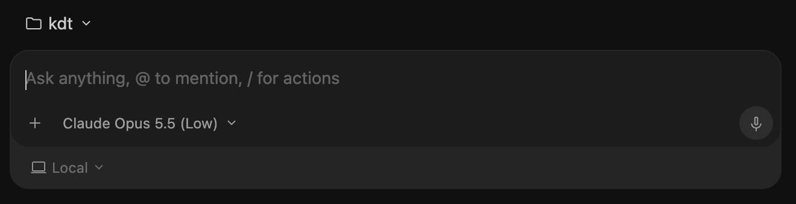

Nhờ AI làm phần việc giấy tờ, bạn giữ phần suy nghĩ
Antigravity là ứng dụng của Google, trong đó có một trợ lý AI (gọi là agent). Bạn nhắn yêu cầu bằng tiếng Việt như nhắn tin, agent sẽ đọc file của bạn, soạn nội dung và lưu thành file mới (Word, PDF, trang web…). Bạn không cần biết lập trình.
Đọc trước khi dùng: AI có thể bịa điều luật, số hiệu văn bản hay án lệ nghe rất thật. Luôn đối chiếu với nguồn chính thức, và đừng đưa thông tin mật của khách hàng vào. Xem chi tiết ở phần Lưu ý riêng cho ngành luật.
1 Làm quen khung chat
Mọi thứ bắt đầu từ một khung chat. Đây là ảnh thật từ Antigravity, mình chỉ cắt riêng khung này:

Khung chat ở màn hình chính của Antigravity.
Thư mục làm việc (ở góc trên, ví dụ kdt): agent chỉ nhìn thấy file trong thư mục này. Hãy tạo mỗi vụ việc / mỗi môn học một thư mục riêng và bỏ tài liệu vào đó.
Ô nhập “Ask anything, @ to mention, / for actions”: gõ yêu cầu như nói chuyện. Gõ @ để chỉ đích danh một file (ví dụ @hop-dong.docx). Gõ / để mở danh sách thao tác, trong đó có Skill của bạn.
Nút +: đính kèm file hoặc ảnh vào cuộc trò chuyện.
Tên model (ví dụ “Claude Opus 5.5 (Low)”): bộ não của agent. Cứ để mặc định khi mới dùng. Model mạnh hơn thì làm kỹ hơn nhưng chậm hơn.
Local: agent làm việc trực tiếp trong thư mục trên máy bạn. Đây là lựa chọn phù hợp cho người mới.
Biểu tượng micro: đọc yêu cầu bằng giọng nói thay vì gõ.
Cách hỏi tốt nhất: nói rõ (1) bạn là ai / đang làm gì, (2) file nào, (3) muốn kết quả ra sao, (4) điều không được làm. Các prompt mẫu bên dưới đều theo công thức này, bạn chỉ việc copy rồi đổi tên file.
2 Sửa bài tập và soát hợp đồng
Dùng được cho cả hai việc: sinh viên luật nhờ chấm bài tập tình huống, và người đi làm nhờ soát nhanh hợp đồng, văn bản. Nguyên tắc chung: bạn tự làm trước, agent soát lại, bạn quyết định cuối cùng.
Bỏ file vào thư mục (.docx, .pdf, .txt, hoặc ảnh chụp rõ nét).
Gõ yêu cầu, dùng @tên-file để chỉ đúng file.
Agent thường đưa ra kế hoạch trước. Đọc nhanh, đồng ý thì cho làm tiếp.
Mở file kết quả. Chỗ nào chưa hiểu thì hỏi tiếp: “Vì sao ý 3 bị đánh giá là sai?”
Chấm bài tập tình huống luật
Mình là sinh viên năm 2 luật. Đề bài tình huống ở @de-bai.docx, bài làm của mình ở @bai-lam.docx.
Hãy:
1. Đánh giá theo bố cục: xác định vấn đề pháp lý, căn cứ pháp luật, áp dụng vào tình huống, kết luận.
2. Chỉ ra ý còn thiếu hoặc lập luận chưa chặt, giải thích vì sao.
3. Chỗ nào bạn trích dẫn điều luật, hãy ghi rõ tên văn bản và số điều để mình tự tra lại. Nếu không chắc, nói "không chắc" thay vì đoán.
4. KHÔNG sửa file gốc và KHÔNG viết lại bài hộ mình. Ghi nhận xét vào file mới nhan-xet.docx.
Soát hợp đồng, liệt kê rủi ro
Đọc @hop-dong-dich-vu.docx (hợp đồng mẫu, không có thông tin thật).
Lập bảng gồm các cột: Điều khoản | Nội dung chính | Rủi ro cho bên thuê dịch vụ | Đề xuất sửa.
Chú ý đặc biệt: phạt vi phạm, bồi thường thiệt hại, chấm dứt hợp đồng, giải quyết tranh chấp, bảo mật.
Đánh dấu điều khoản mơ hồ hoặc thiếu. Không tự sửa file gốc, ghi kết quả vào file mới bao-cao-soat-hop-dong.docx.
Tóm tắt văn bản pháp luật / bản án dài
Tóm tắt @ban-an.pdf cho người chưa biết vụ việc: các bên, yêu cầu của nguyên đơn, quan điểm của toà, căn cứ pháp luật toà áp dụng, kết quả.
Mỗi ý kèm số trang để mình tra lại. Tối đa 1 trang A4.
File scan / ảnh chụp: nếu chữ mờ, agent có thể đọc sai số tiền, ngày tháng hay tên. Với các chi tiết quan trọng, hãy tự đối chiếu với bản gốc.
3 Tạo file PDF
Agent soạn nội dung và tự chạy công cụ để xuất PDF. Bạn chỉ cần nói rõ loại văn bản, bố cục, khổ giấy. Hợp với: bản tóm tắt vụ việc, memo tư vấn, đề cương ôn thi, bảng so sánh quy định.
Đề cương ôn thi thành PDF
Dựa trên các file trong thư mục ghi-chu/, soạn đề cương ôn thi môn Luật Dân sự thành PDF khổ A4:
- Có mục lục, chia chương rõ ràng, dùng bảng cho phần so sánh khái niệm.
- Mỗi chương có khung "Cần nhớ" và 3 câu hỏi tự kiểm tra.
- Font hỗ trợ tiếng Việt đầy đủ dấu (ví dụ Noto Sans), cỡ chữ 12.
Lưu thành de-cuong-dan-su.pdf. Nếu cần cài thêm thư viện thì hỏi mình trước.
Memo tư vấn một trang
Soạn memo tư vấn 1 trang PDF dựa trên @ghi-chu-vu-viec.docx, gửi cho khách hàng không có nền tảng pháp lý.
Cấu trúc: Tóm tắt vấn đề → Các phương án → Rủi ro của từng phương án → Khuyến nghị. Văn phong dễ hiểu, hạn chế thuật ngữ.
Để trống các chỗ cần luật sư xác nhận bằng dấu [CẦN KIỂM TRA]. Lưu thành memo.pdf.
Lỗi thường gặp: PDF mất dấu tiếng Việt hoặc bảng bị tràn lề. Mở file ngay sau khi tạo, xem trang đầu và trang có bảng. Nếu lỗi, nhắn lại: “PDF bị mất dấu / tràn lề, hãy sửa rồi xuất lại.”
4 Dùng Skill
Skill là một “quy trình mẫu” bạn viết một lần, agent làm theo mãi. Ví dụ: mỗi lần soát hợp đồng đều theo một danh sách kiểm tra cố định của văn phòng bạn, thay vì phải gõ lại prompt dài.
Một skill là một thư mục chứa file SKILL.md. Trong project, đặt tại .agents/skills/<tên-skill>/SKILL.md. Đường dẫn có thể đổi theo phiên bản, hãy đối chiếu với tài liệu Skills chính thức.
.agents/skills/soat-hop-dong/SKILL.md
---
name: soat-hop-dong
description: Soát hợp đồng và liệt kê rủi ro. Dùng khi người dùng nhờ rà soát, kiểm tra hoặc nhận xét một hợp đồng.
---
# Soát hợp đồng
1. Xác định loại hợp đồng, các bên, giá trị, thời hạn.
2. Kiểm tra từng nhóm điều khoản: đối tượng, giá và thanh toán, quyền và nghĩa vụ, phạt vi phạm, bồi thường, bảo mật, chấm dứt, giải quyết tranh chấp, luật áp dụng.
3. Lập bảng: Điều khoản | Nội dung | Rủi ro | Đề xuất sửa.
4. Đánh dấu điều khoản thiếu hoặc mơ hồ.
5. Không tự khẳng định điều luật. Nếu viện dẫn luật, ghi tên văn bản + số điều và ghi chú "cần đối chiếu".
6. Không sửa file gốc. Lưu kết quả vào file mới.
Cách gọi skill
Tự động: chỉ cần nói “soát giúp mình hợp đồng này”, agent thấy mô tả khớp sẽ tự dùng skill.
Gọi đích danh: gõ / trong ô nhập rồi chọn skill, hoặc nhắc tên skill trong yêu cầu.
Không biết viết? Cứ nhờ chính agent: “Hãy tạo giúp mình một skill tên soat-hop-dong theo danh sách kiểm tra sau: …” rồi dán danh sách của bạn vào. Dòng description quan trọng nhất, vì agent dựa vào đó để biết khi nào dùng skill.
5 Tạo trang web
Bạn mô tả, agent viết, bạn xem và chỉnh. Hợp để làm trang giới thiệu văn phòng / câu lạc bộ pháp lý, hoặc trang hướng dẫn thủ tục cho khách hàng.
Trang giới thiệu văn phòng luật (dữ liệu mẫu)
Làm một trang web tĩnh (HTML, CSS, JS thuần) giới thiệu một văn phòng luật tên "Văn phòng Luật Minh Bạch" (tên giả, dùng nội dung mẫu).
Có các mục: Giới thiệu, Lĩnh vực hành nghề (thẻ), Quy trình làm việc (4 bước), Câu hỏi thường gặp, Liên hệ (chỉ để chỗ trống).
Phong cách nghiêm túc, màu xanh đậm và trắng, tiếng Việt, đọc tốt trên điện thoại.
Chỉ tạo file trong thư mục này. Làm xong hãy mở thử, chụp màn hình và cho mình xem.
Xem kế hoạch agent đưa ra, nhất là danh sách file sẽ tạo.
Mở file index.html bằng trình duyệt để xem.
Chỉnh từng điểm nhỏ: “tiêu đề to hơn”, “đổi màu nút”, “thêm mục Tin tức”.
Trước khi đưa lên mạng: xoá mọi tên khách hàng, số vụ việc, số điện thoại thật. Trang công khai thì ai cũng đọc được. Nội dung tư vấn pháp lý đăng công khai cũng nên có dòng “chỉ mang tính tham khảo, không thay thế tư vấn pháp lý”.
6 Dùng Google Flow
Google Flow là công cụ của Google để tạo video và hình ảnh bằng AI, chạy trên web, tách biệt với Antigravity. Trong ngành luật, nó hợp để làm video giải thích pháp luật ngắn cho người dân, hình minh hoạ cho bài thuyết trình, hay video giới thiệu văn phòng.
Mình giả định “gg flow” là Google Flow. Giá, credit và giao diện thay đổi thường xuyên, hãy xem trang trợ giúp chính thức để biết bản mới nhất.
Vào labs.google/flow bằng Chrome trên máy tính, đăng nhập tài khoản Google. Một số tính năng cần gói Google AI trả phí và tốn credit.
Tạo project mới. Ở ô nhập, chọn kiểu tạo: Text to video (chỉ mô tả bằng chữ), Frames to video (đưa ảnh đầu / cuối), hoặc Ingredients to video (ghép ảnh nhân vật, bối cảnh).
Thử bằng model nhanh cho đỡ tốn credit, ưng rồi mới tạo bản chất lượng cao.
Ghép nhiều clip ngắn thành cảnh dài bằng Scenebuilder, rồi tải video về.
Cách phối hợp với Antigravity
Để Antigravity lo phần chữ, Flow lo phần hình: nhờ agent viết kịch bản và chia thành các cảnh, mỗi cảnh một prompt, rồi bạn dán lần lượt vào Flow.
Kịch bản video giải thích pháp luật
Mình cần video 40 giây giải thích cho người dân: "Hợp đồng miệng có giá trị pháp lý không?".
Chia thành 5 cảnh, mỗi cảnh khoảng 8 giây. Với mỗi cảnh viết:
- Lời thoại tiếng Việt (1–2 câu, dễ hiểu)
- 1 prompt tiếng Anh cho Google Flow theo công thức: chủ thể + hành động + bối cảnh + góc máy + ánh sáng/phong cách
Giữ phong cách hoạt hình 2D nhất quán giữa các cảnh. Nội dung pháp lý phải ghi kèm văn bản căn cứ để mình đối chiếu. Lưu vào kich-ban.md.
Video giải thích luật cho công chúng nên được luật sư kiểm tra nội dung trước khi đăng, vì AI có thể diễn đạt sai hoặc dùng quy định đã hết hiệu lực.
7 Lưu ý riêng cho ngành luật
Bảo mật hồ sơ
Không đưa thông tin định danh của khách hàng, bí mật kinh doanh hay hồ sơ vụ việc đang xử lý vào AI nếu chưa được phép.
Ẩn danh trước khi đưa vào: thay tên bằng “Bên A”, “Bên B”, bỏ số CCCD, địa chỉ, số tài khoản.
Hỏi văn phòng / giảng viên về quy định dùng AI trước khi áp dụng cho việc thật.
Kiểm tra độ chính xác
AI có thể bịa điều luật, số hiệu văn bản, án lệ. Mọi trích dẫn đều phải tra lại.
Kiểm tra văn bản còn hiệu lực hay đã được sửa đổi, thay thế.
Nhờ agent ghi rõ “không chắc” thay vì đoán, như trong các prompt mẫu ở trên.
Nơi tra cứu văn bản pháp luật
vbpl.vn: Cơ sở dữ liệu quốc gia về văn bản pháp luật.
Nguyên tắc: AI là trợ lý soạn thảo và rà soát, không phải luật sư. Người ký tên và chịu trách nhiệm cuối cùng vẫn là bạn. Với bài tập ở trường, hãy xem quy định về dùng AI của khoa; dùng để hiểu lỗi sai của mình thì thường ổn, nộp nguyên bài do AI viết thì thường không.